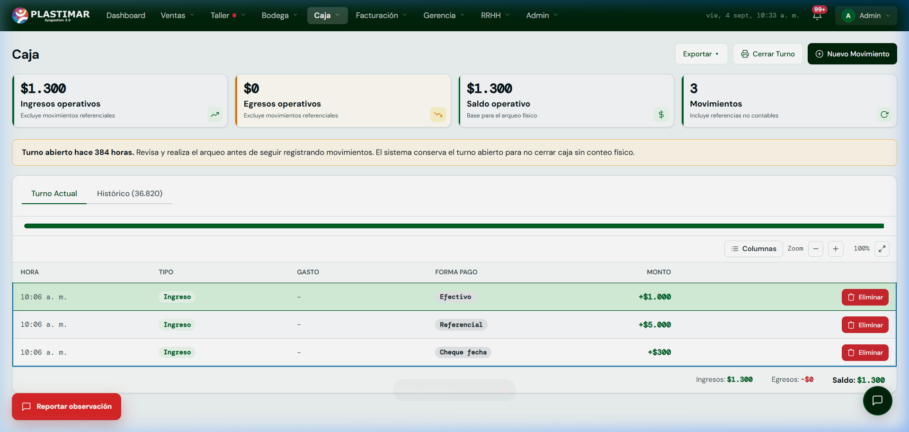

1. Tu Rol en el ERP Plastimar
Tesorería y CarteraEl equipo de caja y cobranza administra la liquidez de Plastimar. Cada peso que ingresa por compras en sala, anticipos de clientes o transferencias bancarias de colegios debe quedar registrado con precisión contable para evitar descuadres y asegurar la entrega oportuna de los productos.
Tu Misión Principal
En Caja: Abrir turnos por sucursal, recibir pagos multiformato (efectivo, tarjetas, cheques, transferencias) y cerrar cada jornada con un arqueo físico 100% cuadrado.
En Cobranza: Monitorear las ventas entregadas pendientes de pago, registrar compromisos y mantener la cartera institucional al día.
2. Pantalla de Caja en el ERP
Tu Mesa de TrabajoAl ingresar a Caja en el menú superior encontrarás la consola de movimientos del turno activo:

Procedimiento Diario de Caja (Paso a Paso)
Apertura de Turno
Al iniciar la jornada, confirma caja/sucursal y presiona Abrir Turno. El flujo vigente no solicita fondo fijo; si se controla externamente, mantenlo según la instrucción administrativa y repórtalo como Falta.
Registrar Pagos de Ventas (+ Nuevo Movimiento)
Cada vez que un cliente paga una venta en mesón o abona a un pedido:
- Haz clic en [+ Nuevo Movimiento].
- Selecciona el número de orden de venta asociada.
- Elige la Forma de Pago: Efectivo, Tarjeta Débito/Crédito, Transferencia o Cheque al Día/Fecha.
- Ingresa el monto recibido. El sistema rebaja automáticamente el saldo por cobrar de la venta.
Cierre de Turno y Arqueo Diario
Al término de la jornada, antes de retirarse, presiona el botón [Cerrar Turno]:
- El sistema solicitará el conteo físico de billetes y monedas.
- Se ingresa el total de vouchers de Transbank y cheques en custodia.
- El sistema compara el conteo físico contra el Saldo Operativo calculado.
- Si existe diferencia, vuelve a contar, revisa movimientos y registra la observación. La pantalla puede permitir confirmar; la autorización sigue siendo responsabilidad de la jefatura.
3. Gestión de Cobranza y Cuentas por Cobrar
Control de MoraEn Cobranza se controla la cartera de instituciones públicas, fundaciones y colegios que compran a 30, 60 o 90 días:
📅 Compromisos de Pago
Cuando contactes a la encargada de adquisiciones o finanzas del colegio, registra la Fecha Comprometida de Pago y la bitácora de la llamada. Esto mantiene informada a la fuerza de ventas.
⚠️ Alerta de Bloqueo Comercial
Prioriza la cartera marcada con más de 30 días y aplica la política comercial definida. No se debe prometer un bloqueo automático de ventas o despachos; escala el caso al responsable.
¿Diferencia en el arqueo o error al registrar un medio de pago?
Si un movimiento no refleja el abono correcto o hay una discrepancia en el saldo operativo:
Haz clic en el botón flotante rojo [Reportar observación] en la esquina inferior izquierda. Indica la sucursal, el número de caja y el detalle del movimiento para soporte inmediato.
4. Controles y excepciones
Dinero- Todo pago requiere turno abierto, venta con saldo y documento referencial activo.
- El monto debe ser mayor que cero y no superar el saldo.
- Después de confirmar, verifica movimiento y saldo antes de repetir.
- El sistema puede permitir cerrar con diferencia: recontar, documentar y obtener autorización.
- No compensar pagos equivocados con otro movimiento informal.